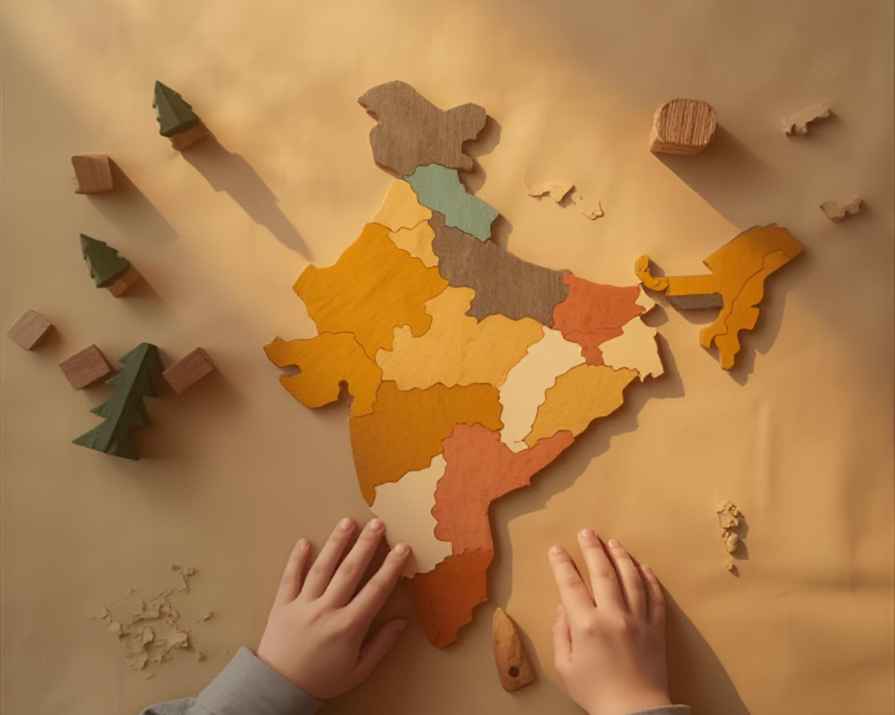
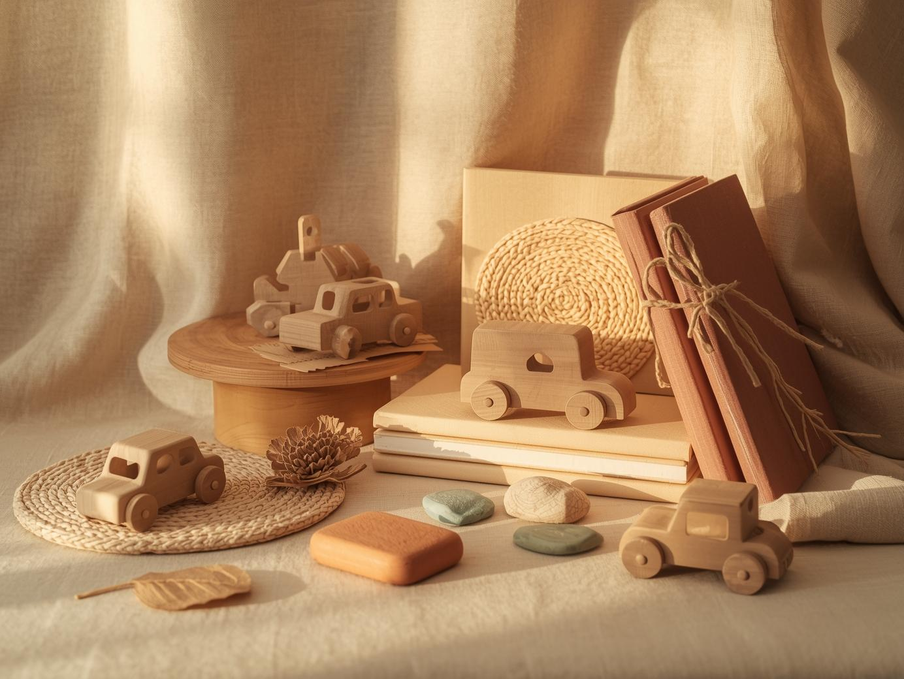

Quiet Corners

Linen on the floor, wooden wheels, the weight of a hardbound book. No hurry, no notifications — just a child returning to the same small objects, every day, until they feel like home.
Maps Without Homework

Some little ones fall asleep to one language and wake up to another. We’re sketching quieter ways for them to trace where they come from, without turning it into drills, charts or guilt.
Soft Adventures

Tractors, jeeps, little post vans and unmarked roads. We care less about the destination, and more about the stories that unfold while a child quietly drives them there.